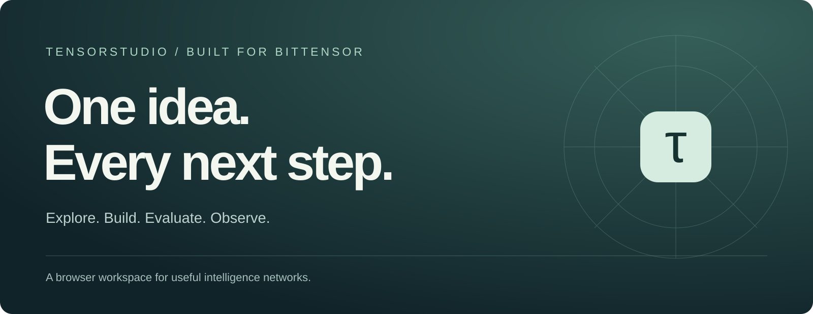
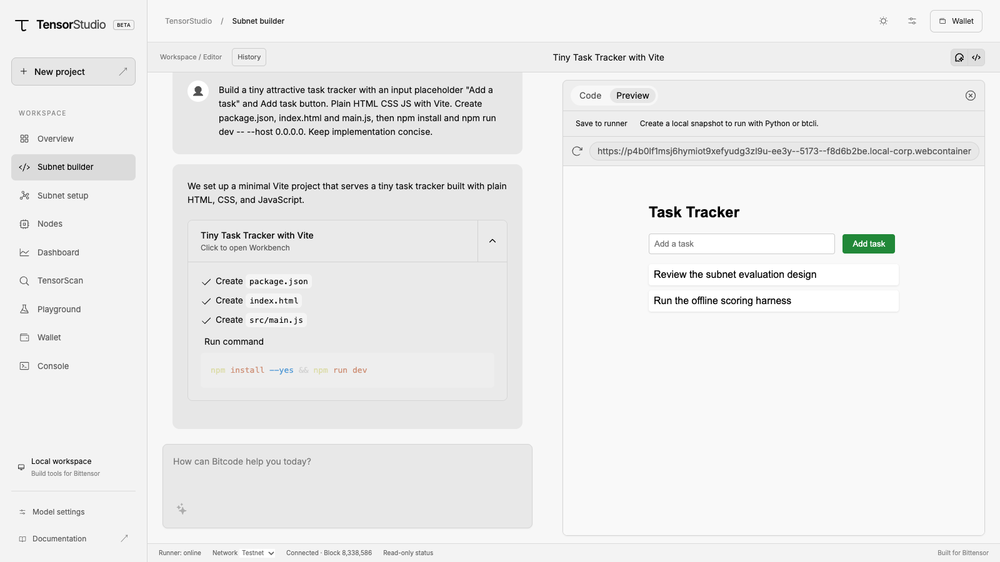
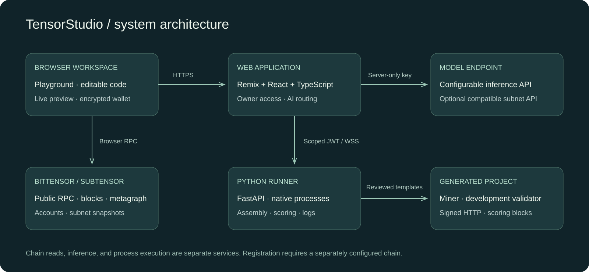

Project brief / TensorStudio
A browser workspace for Bittensor builders, subnet teams and researchers.
Subnet development spans task design, code, evaluation, processes and chain state. Teams lose context moving between tools, and an attractive prototype can hide an unclear evaluation problem.
TensorStudio connects a guided assistant, editable code, live previews, structured subnet recipes, scoring reports, native processes and a read-only explorer.
Explore → Build → Define → Evaluate → Run → Observe
Product experience

Describe a problem, inspect a suggested plan and build an interface. Review generated files beside a working preview.
Provide labelled QA/classification data. Inspect the task, scoring and weight blocks before assembling reviewed templates.
Read process logs, manage lifecycle and use authenticated runner commands. Inspect chain observations independently in TensorScan.
Use controlled offline fixture reports to understand scoring behavior. Simulated timing is labelled explicitly.
Architecture / Bittensor fit / business

The workflow follows Bittensor's task, miner, validator and subnet roles. Subtensor supplies chain observations; signed HTTP authenticates generated miner requests. Inference uses a separately configured endpoint. A registered subnet serving the assistant is not asserted.
Potential revenue: team subscriptions, managed runners, private evaluations, observability and integration services. Validate customer demand and measure compute, inference, storage and support costs before setting prices. No revenue or token return is promised.
Open TensorStudio · Bittensor documentation
The hosted free runner can sleep and reset files. A private development chain and durable production infrastructure require separate configuration. Registration and rewards are separate from starting a process.